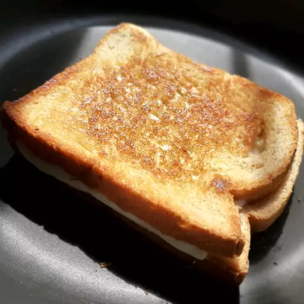

Grilled Cheese Sandwich Recipe

Ingredients
- White Bread
- Sliced Cheese
- Butter
Steps
- Butter the bread on one side and place the bread butter-side down on a hot skillet.
- Top with cheese, then place another slice of bread on top (butter-side up).
- Cook until the bottom slice is lightly browned, then flip.
- Continue cooking until the cheese is melted.